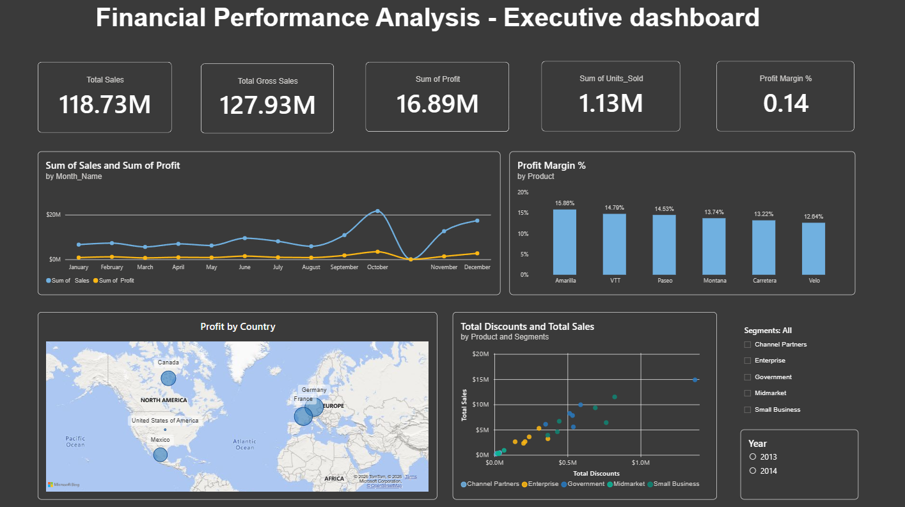
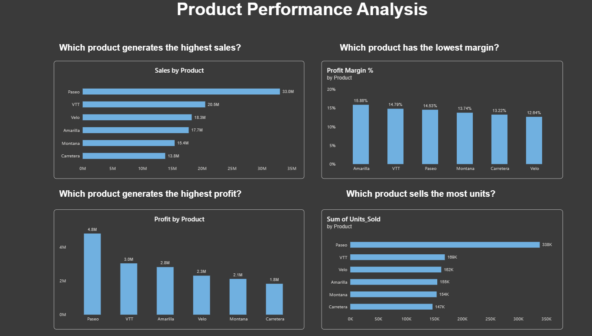
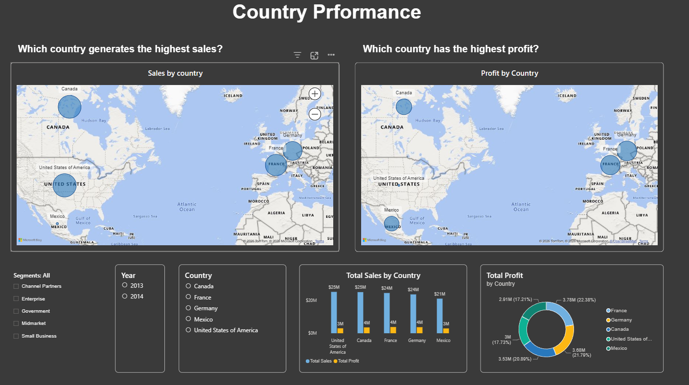
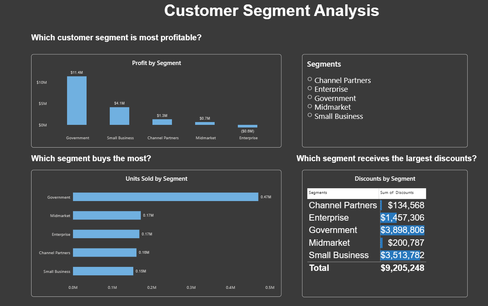
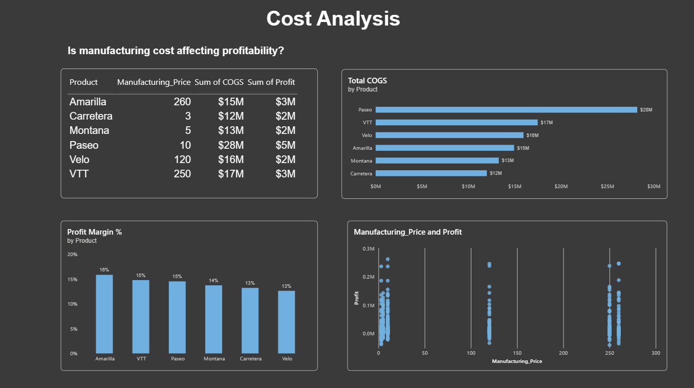
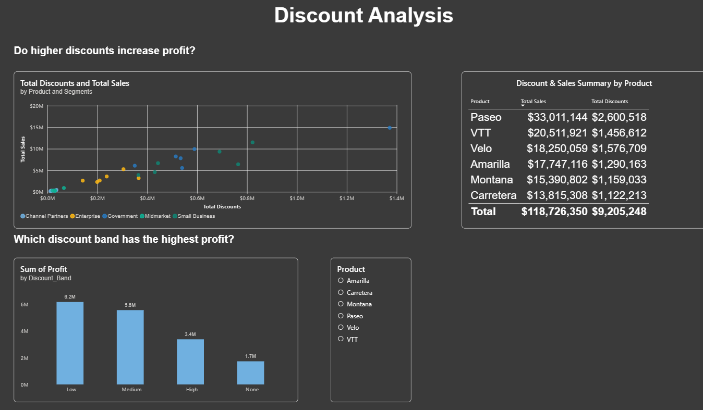

A comprehensive business intelligence project that analyzes financial performance across products, countries, customer segments, manufacturing costs, and discount strategies. The objective of this project is to identify key revenue drivers, profitability trends, and actionable business opportunities through interactive Power BI dashboards.
Business leaders need a clear understanding of which products, countries, and customer segments contribute most to revenue and profitability. They also need to evaluate whether manufacturing costs and discount strategies are improving or reducing financial performance. Without an executive dashboard, management must manually analyze multiple reports, making strategic decision-making slow and inefficient.
This project uses Microsoft's Financial Sample Dataset. The dataset contains transactional financial information including products, customer segments, countries, manufacturing costs, discounts, sales, gross sales, profit, COGS and monthly transactions. 700 Rows, 6 Products, 5 Countries, 5 Customer Segments, and 2 Years of data (2013–2014).
$118.73 Million
$127.93 Million
$16.89 Million
1.13 Million
14%
The company generated over $118 million in revenue while maintaining an overall profit margin of approximately 14%. Sales increased steadily throughout the year, with a noticeable peak during October, indicating strong seasonal demand.






This dashboard evaluates product-level performance by comparing sales, profit, profit margin, and units sold. The objective is to identify the company's strongest and weakest performing products and determine where management should focus future investments.
Paseo should remain the company's flagship product because it leads sales, profit, and units sold. However, Amarilla demonstrates the highest profitability, suggesting it deserves additional marketing investment to maximize margins.
Country-level analysis helps management understand where revenue and profit are being generated and identify geographic markets with future growth potential.
Canada and the United States should remain priority markets due to their strong revenue contribution, while France demonstrates excellent profitability. Mexico represents an opportunity for targeted sales campaigns and market expansion.
Customer segmentation identifies which customer groups generate the greatest financial value and where marketing resources should be allocated.
Government organizations represent the company's most valuable customer segment and should remain a strategic priority. Enterprise customers require pricing and discount reviews to improve profitability.
Manufacturing costs and Cost of Goods Sold (COGS) directly affect overall profitability. This analysis evaluates whether high production costs reduce financial performance.
Although Paseo incurs the highest production costs, its strong sales volume offsets these expenses. Profitability depends on balancing pricing, manufacturing costs, and demand rather than focusing on cost reduction alone.
Discount strategies can increase sales but may reduce profitability. This dashboard evaluates whether discounts create long-term business value.
The analysis suggests that moderate discount strategies are more effective than aggressive discounting. Maintaining healthy margins while offering competitive discounts will improve long-term profitability.
Paseo is the company's primary revenue generator and should remain a strategic product.
Amarilla delivers the strongest profit margin, making it an attractive candidate for future marketing investment.
Government customers contribute the largest share of profit and sales volume.
Mexico presents opportunities for sales growth through targeted marketing initiatives.
High manufacturing costs alone do not determine profitability. Sales volume and pricing strategy are equally important.
Smaller discounts produce healthier margins than aggressive discount campaigns.
Paseo consistently generates the highest revenue, profit, and sales volume. Management should prioritize inventory planning, product availability, and marketing campaigns to maintain its market leadership.
Although Amarilla generates lower sales than Paseo, it delivers the highest profit margin. Increasing its market visibility could improve overall profitability.
Enterprise customers currently generate negative profit. Management should review pricing strategies, discount policies, and customer acquisition costs for this segment.
Canada, France, and the United States consistently deliver strong financial performance. These markets present opportunities for additional investment and expansion.
The analysis shows that excessive discounts do not always increase profitability. A controlled discount strategy can protect profit margins while maintaining healthy sales growth.
Manufacturing cost alone does not determine profitability. Management should focus on balancing production costs with pricing strategy and demand.
This dashboard enables executives to monitor financial performance through a single interactive report. Decision-makers can quickly identify high-performing products, profitable customer segments, country-level opportunities, and cost drivers without manually reviewing multiple reports.